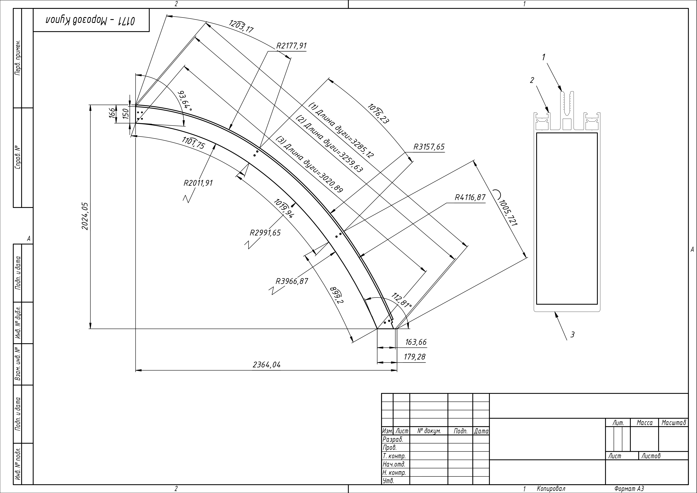
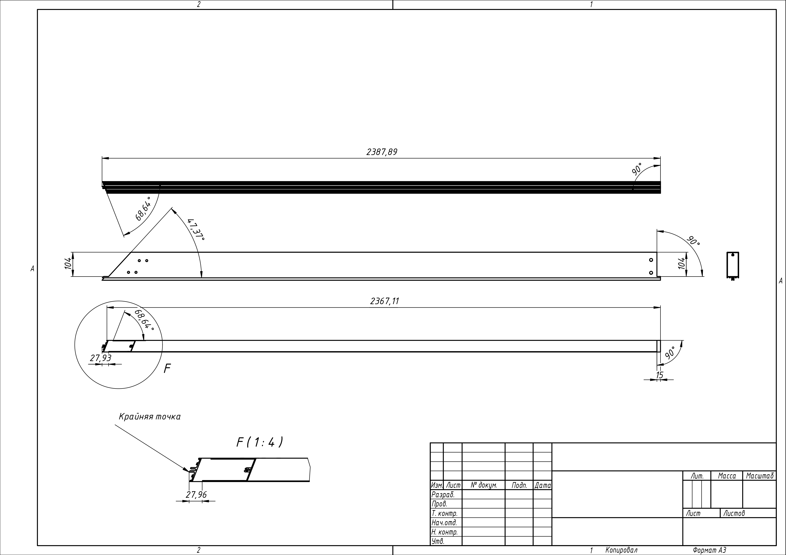

<section class="first-project">
    <div class="first-project__layouts container">
        <canvas class="canvas"></canvas>
        
    </div>
    <div class="first-project__layers container">
        
        
    </div>
    <div class="delimiter dark"></div>
</section>